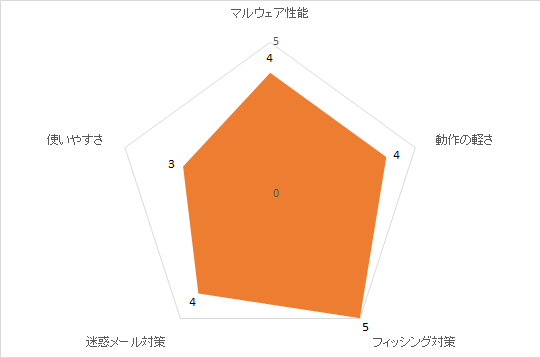
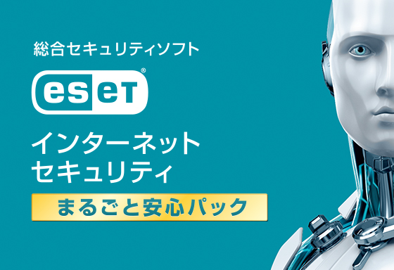
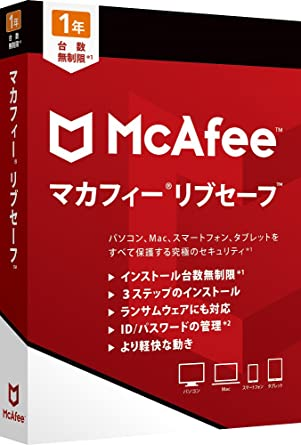
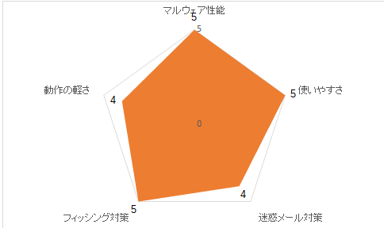
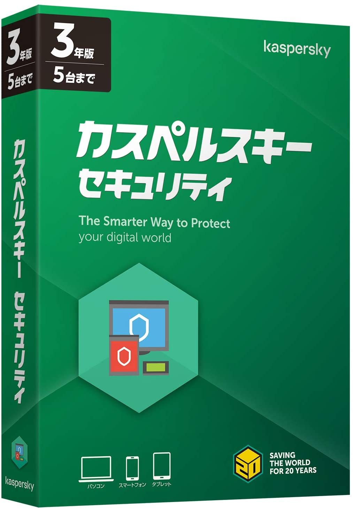
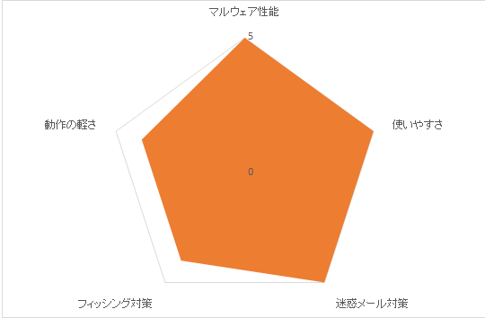
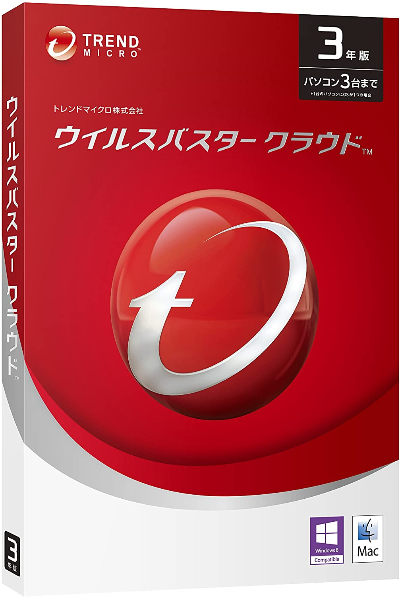
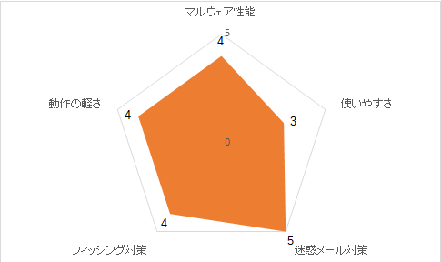
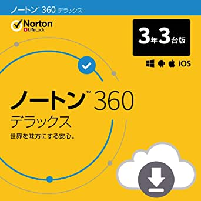
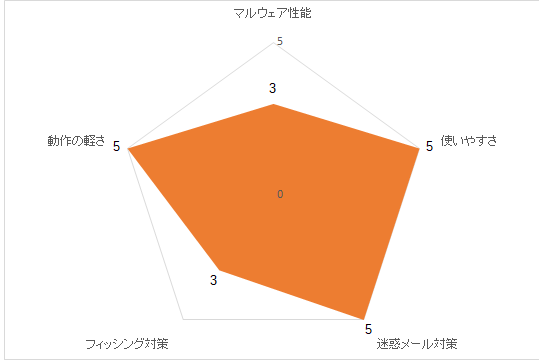

セキュリティソフトの必要性と未来大生の現状
Windows10に標準搭載されている「Windows Defender」。無料で搭載されているものだが性能は悪くなく、必要な機能のおおよそは揃っている。
具体例としては、ウイルスやマルウェア（悪意のあるソフトウェア）などの脅威を継続的にスキャンし、保護してくれる。[1]
他にも様々な機能が搭載されているので「有料のセキュリティソフトをわざわざ購入してインストールする必要が無い」と思う人もいるだろう。
では、Windows Defenderに加えて、有料のソフトを利用する意味や利点はなんだろうか。
それは「セキュリティレベルの強化」と「便利な機能の追加」である。
Windows Defenderの
- x未知のマルウェアを防ぐことが出来ない危険性がある
- x迷惑メール防止やネットバンキング保護ができない
- xID/パスワード管理機能や保護者見守り機能などの便利機能が存在しない
というような課題を有料のソフトを使用することで解決できる。
Windows Defenderのみに頼らず、良質な有料ソフトを導入した方がより安全、より快適なものになるだろう。
[1] Windows セキュリティによる保護
目次
windows defender
特徴
◎ランサムウェアからの保護強化機能を搭載
◎不正なWebサイトをブロックするSmartScreen
◎脆弱性を保護するExploit Protection
◎ウイルスに感染していないかどうか探すスキャン保護
注意点
x誤検知の可能性がある
x迷惑メールや不適切な広告を防ぐ機能はない
x未知のウイルスには対応できない可能性がある

総評
・普段使いなら全然大丈夫
・単体だと不安
・目に見える要素が少ない(ないわけではない)
・PCを普通に使う人ならこれで十分
ESET インターネット セキュリティ

特徴
◎軽さを重視して設計・開発をしているため動作が軽い
◎世界で初めて、遺伝子技術を応用した”アドバンスドヒューリスティック機能”を
搭載した経歴があり、高い未知ウイルス検出力
◎クラウド環境だけでなく、ローカル環境で未知のマルウェアに
対応するための機械学習機能による解析ができる
注意点
xESET Smart Security Premiumという上位版の製品にのみ、
ID・パスワード機能が搭載
対象者
・搭載しているメモリの容量が少ない人向け
・3年版が安いため更新が面倒な人や長期間変更をしない人向け
総評
・軽さが売りなので低スペックのPCでも動かせるのが魅力
・セキュリティソフトとしての性能も悪くはない
マカフィー リブセーフ

特徴
◎顔認証や指紋認証でサインインできるID・パスワード管理機能がある
◎同居する家族などで何台でも他の端末にインストール可能
◎PCからスマホ、タブレットまですべての端末に
◎「アプリブースト」「ウェブブースト」など処理速度を改善する機能が多数
◎ファイルを復元不能に削除する機能「シュレッダー」
注意点
x 機能が多く、また関連するアプリも多いが、「セーフキー」、
「オンラインバックアップ」、「モバイルセキュリティ Kindle版」など
サービス終了するアプリや機能も多い
x 勝手にマカフィー製品がインストールされるケースがある

対象者
・
・
総評
・セキュリティに関しては普通だがほかの機能は多数搭載されている
・ほかのセキュリティソフトにできないことができる
・デメリットの数が目立つ
カスペルスキー セキュリティ

特徴
◎システムウォッチャーという機能によって悪意のあるソフトウェアを監視し、万が一
ランサムウェアによって大切なファイルが暗号化、改ざんされてもロールバックする機能
◎オンラインバンキングサイトを利用するときは、"ネット決済保護"という
仮想環境でブラウザを実行できるため、万が一ウイルスが活動しようとしても、
不正なコードの実行を防ぐことができる
◎カスペルスキーのファイアウォールは日本で発売されている
セキュリティソフトの中では群を抜いて高い性能
◎「ファイル保護」、「ウェブ保護」、「ネットワーク攻撃防御」、「ファイアウォール」、
「ネット決済保護」など有しており、すべての機能が優秀で「システムウォッチャー」では、
悪意あるソフトウェアを監視し、脆弱性攻撃やランサムウェアをブロックすることが可能
◎第三者テスト機関において、1位獲得回数、テスト参加回数、TOP3ランクイン数の
いずれも、カスペルスキーはトップ

注意点
x ID・パスワード管理機能はない
x macでの動作が重い
対象者
・
・
総評
・動作が重いらしい(要検証)
・性能だけを見て買うなら一択
・ID・パスワード管理機能がないだけ
ウイルスバスタークラウド

特徴
◎インターネット上にあるクラウド上でスキャンなどをするため、動作が軽い
◎最新版の３本柱のひとつがプレミアム版に付属の「デジタルライフサポート」による
365日のサポート
◎トレンドマイクロの防御アプローチ「XGen」
・侵入を防止するWeb脅威対策
・進入時に検知するAI技術による機械学習型スキャン
・データを保護するフォルダシールド
◎SNS（facebook、Twitterなど）に貼られたURLも安全か確認できる
◎Webサイトが作成されてからの時間、登録者情報、URLの文字列、HTMLのソースコードなどを
AIが分析して不正サイトかを評価し、ブロックする機能を新たに搭載

注意点
x オーストリアのAV-Comparativesの過去3回によると
保護率は十分高いが、誤検出が平均よりも多いという理由で
AWARD LEVELSは最高ランクの次のADVANCE（★★）
対象者
・初心者向け
総評
・前が有名なだけあってサポートも充実
・すべて日本語なので初心者でも使いやすい
ノートン360

特徴
◎ネットワーク保護、ファイル保護、評判・評価による保護、ふるまい検知機能など、
あらゆる機能の性能が良く、非常に完成度の高いセキュリティソフト
◎評判・評価システムの歴史が長く、また世界シェアNo.1の利用者から
収集する大量の情報により、評価精度は非常に高い
◎ペアレンタルコントロールの「ノートンファミリープレミア」の機能が秀逸で、
子供がいるならこのソフトの使用がおすすめ
◎ドイツの第三者評価機関であるAV-TESTのAwards2017および2018と2年連続で、
「Best Protection」の賞を獲得（2年連続で受賞は他にBitdefenderのみ）
注意点
x 利用者の少ないプログラムをマルウェアとみなして削除する場合があり
ソフトウェア開発者は、除外の設定などをする必要が出てくる場合もあります。

対象者
・高価でも、より安全なソフトが欲しい方
・シェア、知名度の高いセキュリティソフトが欲しい方
・子供もPCを使う家庭
総評
・高い以外の点で使っていくうえで短所はない(誤検知を除く)
・マルチデバイスに対応しており複数台可能な点がGood